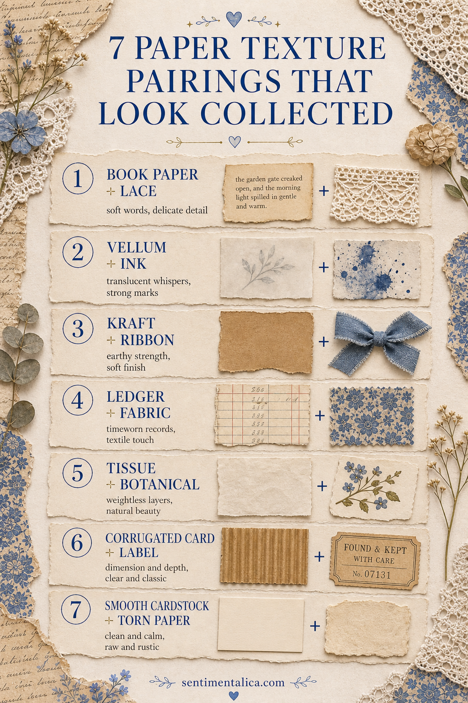
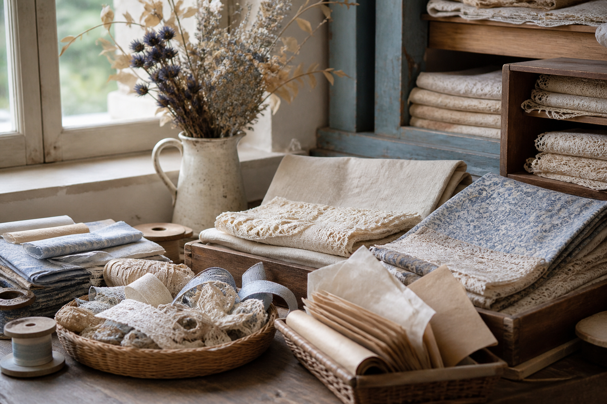

Texture makes a paper page feel handled, saved, and personal. The trick is not using every interesting surface at once. Pair one soft or translucent material with one firmer, more graphic material, then let plain paper separate repeated textures.

Seven useful pairings
Vellum and book paper soften printed words without erasing them. Corrugated card and tissue balance sturdy ridges with fragile edges. Tracing paper and ledger paper create a quiet archival layer. Handmade cotton paper and a crisp label mix organic fibers with clean geometry.
Tea-dyed paper and glassine combine age with a subtle sheen. Fabric-backed paper and a postage stamp place softness beside a precise small detail. Finally, embossed paper and plain kraft let raised pattern stand out without competition.

Change scale, not just material
When both textures have strong patterns, make one large and one tiny. A broad deckled sheet can support a small embossed tab; two equal rectangles will compete. Torn edges are most effective when a nearby edge is clean and straight.
Use touch as an editing tool
Close your eyes and run a finger across the loose arrangement. If every inch changes dramatically, remove a layer. Smooth space gives rough textures somewhere to register. The page should have a rhythm: calm, detail, calm.
Attach without flattening everything
Glue only the center of a tissue or fabric edge so it can lift slightly. Use narrow tape behind vellum where another layer will hide it. Reserve bulky clips for the edge of the page. Good texture remains visible and tactile while the page still closes comfortably.